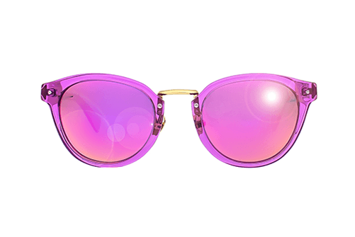
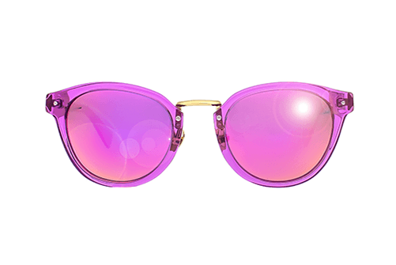

Посольство Латвійської Республіки в Україні до кінця місяця не прийматиме до розгляду заявки на отримання візи від власників безчіпових закордонних паспортів нового зразка. Цю інформацію "Європейській правді" підтвердили представники посольства, а також громадяни, що намагалися податися на отримання візи.
Венеция строго хранила секреты изготовления прозрачных стекол, что делало стоимость очков весьма высокой, а сами очки – дорогим и эксклюзивным подарком. Их даже включали в завещания наряду с драгоценностями и прочими ценными вещицами. Высокая стоимость материалов, дорогой процесс производства да и (что греха таить) невысокая грамотность населения делали очки доступными только для знати.
Но уж знать отрывалась по полной: очки носили не для коррекции зрения, а как дань моде и для демонстрации своих высоких доходов. Любопытно, что очки изображались даже на картинах с библейскими сюжетами, что является вопиющим анахронизмом.
Для тех, кто действительно нуждался в очках – для переписчиков книг, например, — они были недоступной роскошью. Этот момент великолепно описан гениальным Умберто Эко в «Имени Розы». «Волшебные стекла» вызывали у суеверных людей самые неожиданные реакции, и слова «купить модные очки» были бы просто невозможны.
Такая ситуация продлилась не один десяток лет, но с развитием книгопечатания и некоторым увеличением количества грамотного населения и очков стало больше, и использоваться они стали не только тщеславия ради. Первые очки изготавливались для дальнозорких пациентов – и только в 16 веке появились очки для близоруких.
Оправа к очкам – от монокля до современных решений
Стекло было дорого в изготовлении, но не только это стало проблемой для тогдашних «оптиков». Как закрепить линзу? Самым первым решением был монокль (от «mono” — один) — одно длинное стекло на рукоятке, которое прикладывали к глазам при необходимости. Следующий шаг – разделение одной линзы монокля надвое: так получились бинокли (от «би» — два, двойной) с одной или двумя ручками.
Но все эти решение были не так чтобы очень удобны для обычного «очкарика»: как можно работать руками, если одна из них занята моноклем? Таким образом, пра-очки опять оказались доступны только богачам. Впрочем, постоянно появлялись новые идеи, крепления и фиксаторы – и таким образом понемногу очки и достигли того вида, который мы наблюдаем сегодня.
Защитные очки
Первые солнцезащитные очки были отмечены у жителей Крайнего Севера – там, где снежная слепота способна в прямом смысле этого слова убить неосторожного жителя. Защитная пластина с узкой прорезью для глаз, конечно, оставляла совсем небольшой обзор, но спасала от резких отраженных от нетронутого снега солнечных лучей.
Любопытно, что одни из первых затемненных стекол использовались вовсе не для защиты от солнца – их ввели в обиход китайские судьи: за линзами из дымчатого кварца не было видно выражения глаз чиновника.
Сегодня солнцезащитные очки – одна из самых необходимых вещей современного человека. Если очки для зрения можно заменить контактными линзами, то защиту от солнца обеспечивают пока что только очки. Ray Ban, Balenciaga, Gianfranco Ferre, Givenchy и прочие модные бренды каждый год предлагают публике самые разнообразные варианты.
Что предлагают дизайнеры сегодня?
Очки 2014 – 2015 года отличаются удивительным разнообразием. Здесь есть и удивительно дерзкие многоцветные оправы, и очки-оверсайз, закрывающие практически половину лица, и оригинальнейшие модели в квадратной оправе, которая идет далеко не всем, но отличается потрясающей популярностью, и, разумеется, любимые всеми «авиаторы» и «лисички».
Пожалуй, несколько уступили свои позиции круглые очки а-ля Джон Леннон – но это не означает, что они полностью исчезли со страниц модных журналов. Очки на фото звезд и знаменитостей – привычный модный аксессуар, и уже никому не придет в голову стесняться их или подсмеиваться над очкариками. Выбор очков – достаточно сложное, но безумно увлекательное занятие, и если вы намерены блистать в этом сезоне, то без очков вам никак не обойтись.

 
